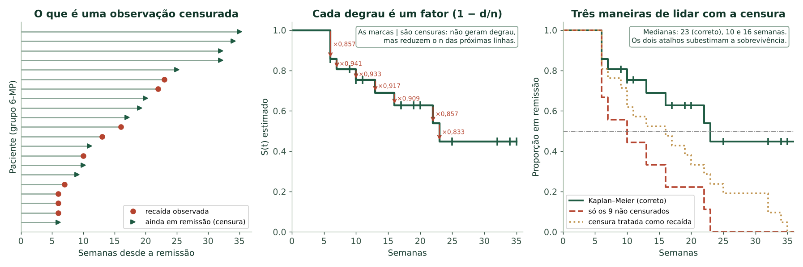
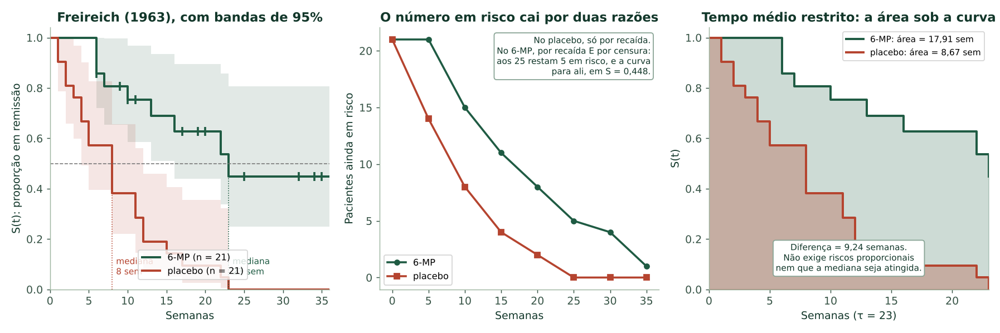

Estimador Kaplan–Meier
Estima a função de sobrevivência a partir de dados com censura, usando o produto das probabilidades condicionais de sobreviver a cada tempo de evento.
Comece por aqui
Em estudos de tempo até um evento, parte das unidades ainda não teve o evento quando o acompanhamento termina. Descartá-las enviesa o resultado para baixo, porque são justamente as que foram melhor; tratá-las como se o evento tivesse ocorrido enviesa na mesma direção. O estimador de Kaplan–Meier resolve isso usando a informação parcial que cada uma carrega: sobreviveu ao menos até aqui.
Sobreviver até a semana 20 é sobreviver à semana 1, e depois à semana 2, e assim por diante. O estimador escreve isso como um produto de fatores \((1-d_j/n_j)\), um por tempo de evento, e a censura entra apenas reduzindo o \(n_j\) dos fatores seguintes — sem nunca produzir um degrau na curva.
O que é o estimador
Nos tempos de evento \(t_1<t_2<\dots<t_m\), sejam \(d_j\) o número de eventos em \(t_j\) e \(n_j\) o número de unidades ainda sob risco imediatamente antes. A probabilidade de sobreviver a \(t_j\), dado que se chegou até ali, é estimada por \(1-d_j/n_j\), e a probabilidade de sobreviver até \(t\) é o produto dessas probabilidades condicionais.

No grupo 6-MP, o último evento ocorre na semana 23 e a curva para em \(S=0{,}4482\): há cinco pacientes censurados depois disso, e o que teria acontecido com eles não foi observado. A consequência prática é que a média de sobrevivência não é estimável — ela exigiria a área sob uma curva que nunca se completa. A saída é o tempo médio restrito, a área até um horizonte \(\tau\) declarado.
Pressupostos e como verificá-los
| Pressuposto | Por que importa | Como verificar |
|---|---|---|
| Censura não informativa | Quem sai em t deve ter o mesmo risco de quem fica. | Não há teste. Examine os motivos de saída e compare as características de quem saiu e de quem ficou. |
| Origem do tempo bem definida | A escala do tempo precisa ser a mesma para todos. | Protocolo: data do diagnóstico, da randomização, da cirurgia. |
| Evento definido sem ambiguidade | Tempos dependem do critério de desfecho. | Definição operacional no protocolo. |
| Observações independentes | A variância de Greenwood pressupõe isso. | Delineamento; para dados agrupados, modelos de fragilidade. |
| Ausência de truncamento à esquerda não tratado | Entradas tardias distorcem o conjunto em risco. | Use a forma de contagem: Surv(início, fim, evento). |
| Risco estável ao longo do recrutamento | Comparar coortes de épocas distintas pode confundir. | Estratifique por período de entrada. |
Na simulação desta ficha, com tempos exponenciais de média 10 e \(S(10)=0{,}3679\) verdadeiro, os dois mecanismos não informativos — fim do estudo e perda aleatória — devolvem 0,3680 e 0,3669. Quando quem iria bem abandona cedo, a estimativa cai para 0,2651; quando quem iria mal é retirado, sobe para 0,5339. O erro chega a 45% do valor verdadeiro, e nenhum teste nos dados o detecta, porque o que teria acontecido depois da censura não foi observado. É uma suposição sobre o delineamento, a ser defendida com argumento substantivo.
Formulação e cálculo
O estimador é não paramétrico e de máxima verossimilhança: não há hipótese nula a testar, mas há uma quantidade a estimar e uma variância a calcular.
Em que:
- \(t_j\)
- \(j\)-ésimo tempo em que houve ao menos um evento
- \(d_j\)
- número de eventos em \(t_j\)
- \(n_j\)
- número de unidades sob risco imediatamente antes de \(t_j\)
- \(\hat S(t)\)
- probabilidade estimada de sobreviver além de \(t\)
- \(\tau\)
- horizonte declarado para o tempo médio restrito
Exemplo numérico, passo a passo
| tⱼ | nⱼ | dⱼ | Censuras | 1 − dⱼ/nⱼ | Ŝ(tⱼ) | EP | IC 95% |
|---|---|---|---|---|---|---|---|
| 6 | 21 | 3 | 1 | 0,8571 | 0,8571 | 0,0764 | [0,7198; 1,0000] |
| 7 | 17 | 1 | 0 | 0,9412 | 0,8067 | 0,0869 | [0,6531; 0,9964] |
| 10 | 15 | 1 | 2 | 0,9333 | 0,7529 | 0,0963 | [0,5859; 0,9676] |
| 13 | 12 | 1 | 1 | 0,9167 | 0,6902 | 0,1068 | [0,5096; 0,9348] |
| 16 | 11 | 1 | 0 | 0,9091 | 0,6275 | 0,1141 | [0,4394; 0,8960] |
| 22 | 7 | 1 | 3 | 0,8571 | 0,5378 | 0,1282 | [0,3370; 0,8582] |
| 23 | 6 | 1 | 0 | 0,8333 | 0,4482 | 0,1346 | [0,2488; 0,8074] |
Em \(t=6\) há 21 pacientes sob risco e 3 recaídas, logo o primeiro fator é \(1-3/21=0{,}8571\). Há também uma censura em 6, que não produz degrau mas sai do conjunto em risco.
Em \(t=7\) restam 17 sob risco — 21 menos as 3 recaídas e menos a censura — e há 1 recaída:
O processo segue até \(t=23\), onde \(\hat S=0{,}4482\). Restam ainda 5 censuras depois disso, de modo que a curva termina ali, sem chegar a zero.
A mediana é o primeiro tempo em que a curva atinge ou cruza 0,5. Como \(\hat S(22)=0{,}5378\) e \(\hat S(23)=0{,}4482\), a mediana é 23 semanas. No placebo, pelo mesmo critério, são 8 semanas.
Propriedades
- Sem censura, \(\hat S(t)\) coincide com a proporção amostral de sobreviventes: no placebo, \(\hat S(8)=8/21=0{,}3810\).
- É o estimador não paramétrico de máxima verossimilhança da função de sobrevivência.
- É consistente e assintoticamente normal; a variância de Greenwood é a estimativa usual.
- A curva é uma escada contínua à direita, com degraus apenas nos tempos de evento.
- Se a maior observação for censurada, \(\hat S\) não chega a zero e a média não é estimável.
- O estimador de Nelson–Aalen do risco acumulado, \(\hat H(t)=\sum_j d_j/n_j\), é a alternativa, com \(\hat S(t)=e^{-\hat H(t)}\).
- A mediana é muito mais estável que a média sob censura, e é por isso que é a medida de posição usual na área.
Como interpretar os resultados
| Elemento | O que informa | Cuidado |
|---|---|---|
| n, events | Tamanho e número de eventos. | O poder depende dos eventos, não de n. |
| median | Primeiro tempo com S(t) ≤ 0,5. | Pode não ser atingida: o R imprime NA. |
| 0.95LCL / 0.95UCL | IC da mediana. | Depende de conf.type. |
| survival em t | Probabilidade acumulada. | Sempre com o intervalo. |
| Marcas na curva | Censuras. | Muitas censuras cedo pedem cautela. |
| rmean | Tempo médio restrito. | Só interpretável com o τ declarado. |
| Tabela de risco | Quantos restam em cada tempo. | A cauda da curva é instável quando restam poucos. |
No grupo 6-MP, a mediana de 23 semanas tem IC 95% de [16; não atingido] com a transformação log, que é o padrão de survfit(), e de [13; não atingido] com a transformação log-log. No placebo, [4; 12] e [4; 11]. Não há resposta única: declare qual conf.type foi usado. A transformação log-log tem a vantagem de nunca produzir limites fora do intervalo \([0,1]\).
Como executar no R e em Python
Onde executar o código em Python
Não é preciso instalar nada: o Google Colab é um computador na nuvem, gratuito, que executa Python pelo navegador e já traz as bibliotecas usadas aqui (numpy, scipy e matplotlib).
São duas funções do pacote survival, que vem com o R. Surv(tempo, evento) monta o objeto de resposta, com evento = 1 para evento observado e 0 para censura à direita. survfit() ajusta a curva, e summary() devolve a tabela de vida completa. O argumento conf.type escolhe a transformação do intervalo, e print(fit, rmean = tau) dá o tempo médio restrito. Para os gráficos, survminer::ggsurvplot() produz curva, bandas e tabela de risco em uma só chamada.
library(survival)
fit <- survfit(Surv(tempo, evento) ~ grupo, data = dados)
fit # mediana e IC
summary(fit) # a tabela de vida
print(fit, rmean = 23) # tempo médio restrito
Exemplo de aplicação
Contexto dos dados
Os dados são de Freireich et al. (1963): 42 pacientes com leucemia aguda em remissão induzida por esteroides, pareados por estado clínico e divididos entre 6-mercaptopurina e placebo. Registrou-se o tempo, em semanas, até a recaída. No grupo do 6-MP, 12 dos 21 pacientes ainda estavam em remissão quando o estudo terminou: são as observações censuradas. No placebo, todos os 21 recaíram. É o conjunto clássico da área, e acompanha o pacote survival do R. Os mesmos dados são usados nas fichas do teste log-rank e do teste de Wilcoxon–Gehan, para que a estimação e a comparação possam ser acompanhadas sobre o mesmo material.
Código em R
# Estimador de Kaplan-Meier: exemplo completo ----
# Pacotes: survival (base/recomendado), survminer (gráficos)
# install.packages(c("survminer"))
library(survival)
# Freireich et al. (1963): tempo até a recaída, em semanas.
# O sinal + na impressão marca as observações CENSURADAS.
tempo <- c(6,6,6,6,7,9,10,10,11,13,16,17,19,20,22,23,25,32,32,34,35,
1,1,2,2,3,4,4,5,5,8,8,8,8,11,11,12,12,15,17,22,23)
evento <- c(0,1,1,1,1,0, 0, 1, 0, 1, 1, 0, 0, 0, 1, 1, 0, 0, 0, 0, 0,
rep(1, 21))
grupo <- factor(rep(c("6-MP", "placebo"), each = 21))
dados <- data.frame(tempo, evento, grupo)
table(dados$grupo, dados$evento)
# O objeto Surv: tempo + indicador de evento
Surv(dados$tempo, dados$evento)[1:10]
# O ajuste
fit <- survfit(Surv(tempo, evento) ~ grupo, data = dados)
fit # n, eventos, mediana e IC da mediana
summary(fit) # a tabela de vida completa, linha a linha
summary(fit, times = c(5, 10, 15, 20, 23)) # S(t) em tempos escolhidos
# A conta à mão, no grupo 6-MP
d6 <- subset(dados, grupo == "6-MP")
tev <- sort(unique(d6$tempo[d6$evento == 1]))
nj <- sapply(tev, function(x) sum(d6$tempo >= x))
dj <- sapply(tev, function(x) sum(d6$tempo == x & d6$evento == 1))
data.frame(tempo = tev, n = nj, d = dj,
fator = round(1 - dj/nj, 4), S = round(cumprod(1 - dj/nj), 4))
# Erro-padrão de Greenwood e intervalos de confiança
summary(survfit(Surv(tempo, evento) ~ 1, data = d6))$std.err
survfit(Surv(tempo, evento) ~ grupo, data = dados, conf.type = "log") # padrão
survfit(Surv(tempo, evento) ~ grupo, data = dados, conf.type = "log-log")
survfit(Surv(tempo, evento) ~ grupo, data = dados, conf.type = "plain")
# Quantis de sobrevivência, com intervalo
quantile(fit, probs = c(0.25, 0.50, 0.75))
# Tempo médio restrito de sobrevivência (RMST) até tau = 23
print(fit, rmean = 23)
# O que acontece quando a censura é tratada errado
median(d6$tempo[d6$evento == 1]) # descartar os censurados
median(d6$tempo) # censura tratada como recaída
# A mediana correta, 23, sai do Kaplan-Meier e de mais nenhum desses atalhos.
# Gráficos
plot(fit, col = c("darkgreen", "firebrick"), lwd = 2, mark.time = TRUE,
xlab = "Semanas", ylab = "S(t)", conf.int = TRUE)
legend("topright", levels(dados$grupo), col = c("darkgreen", "firebrick"), lwd = 2)
abline(h = 0.5, lty = 2)
library(survminer)
ggsurvplot(fit, data = dados, conf.int = TRUE, risk.table = TRUE,
pval = TRUE, surv.median.line = "hv",
xlab = "Semanas", legend.title = "Tratamento")
ggsurvplot(fit, data = dados, fun = "cumhaz") # risco acumulado
A mesma análise em Python, com os resultados
Cole o código em um notebook do Google Colab ↗ e execute com Shift+Enter. Os valores abaixo são a saída desse código.
# Bibliotecas: numpy, scipy e matplotlib (todas já no Google Colab)
import numpy as np
from scipy import stats
# ===================================================================
# Os dados de Freireich et al. (1963): 42 pacientes com leucemia,
# pareados, metade recebendo 6-mercaptopurina e metade placebo.
# O desfecho é o tempo até a recaída, em semanas. O sinal + marca
# observações CENSURADAS (o paciente ainda estava em remissão no fim
# do acompanhamento). Os dados acompanham o pacote survival do R.
# ===================================================================
t6 = np.array([6,6,6,6,7,9,10,10,11,13,16,17,19,20,22,23,25,32,32,34,35])
e6 = np.array([0,1,1,1,1,0, 0, 1, 0, 1, 1, 0, 0, 0, 1, 1, 0, 0, 0, 0, 0])
tpl = np.array([1,1,2,2,3,4,4,5,5,8,8,8,8,11,11,12,12,15,17,22,23])
epl = np.ones(21, int)
def km(t, e):
"""Estimador de Kaplan-Meier com erro-padrão de Greenwood."""
t = np.asarray(t, float); e = np.asarray(e, int)
tempos = np.unique(t[e == 1]) # só os tempos de evento
n_risco = np.array([np.sum(t >= x) for x in tempos])
d = np.array([np.sum((t == x) & (e == 1)) for x in tempos])
S = np.cumprod(1 - d / n_risco)
# Greenwood: Var(S) = S² * soma d / (n (n - d))
soma = np.cumsum(d / (n_risco * (n_risco - d)))
ep = S * np.sqrt(soma)
return tempos, n_risco, d, S, ep, soma
def ic_log(S, soma, alfa=0.05):
"""IC pela transformação log, que é o padrão de survfit() no R."""
z = stats.norm.ppf(1 - alfa/2)
with np.errstate(divide="ignore", invalid="ignore"):
sig = np.sqrt(soma)
lo = np.clip(S*np.exp(-z*sig), 0, 1); hi = np.clip(S*np.exp(+z*sig), 0, 1)
return np.nan_to_num(lo), np.nan_to_num(hi)
def ic_loglog(S, soma, alfa=0.05):
"""IC pela transformação log(-log S); é a opção conf.type = 'log-log'."""
z = stats.norm.ppf(1 - alfa/2)
with np.errstate(divide="ignore", invalid="ignore"):
ep_ll = np.sqrt(soma) / np.abs(np.log(S))
lo = S ** np.exp(+z * ep_ll); hi = S ** np.exp(-z * ep_ll)
return np.nan_to_num(lo), np.nan_to_num(hi)
def mediana(tempos, S):
idx = np.where(S <= 0.5)[0]
return float(tempos[idx[0]]) if len(idx) else np.nan
def ic_mediana(tempos, lo, hi):
"""Limites do IC da mediana: o primeiro tempo em que cada banda cruza 0,5."""
a = np.where(lo <= 0.5)[0]; b = np.where(hi <= 0.5)[0]
return (float(tempos[a[0]]) if len(a) else np.nan,
float(tempos[b[0]]) if len(b) else np.nan)
def rmst(t, e, tau):
"""Tempo médio restrito de sobrevivência: área sob a curva até tau."""
tempos, nr, d, S, ep, soma = km(t, e)
x = np.r_[0.0, tempos[tempos <= tau], tau]
y = np.r_[1.0, S[tempos <= tau]]
return float(np.sum(np.diff(x) * y))
print("Freireich et al. (1963): tempo até a recaída, em semanas")
print(f" 6-MP: n = {len(t6)}, eventos = {e6.sum()}, "
f"censuras = {len(t6)-e6.sum()} ({100*(len(t6)-e6.sum())/len(t6):.1f}%)")
print(f" placebo: n = {len(tpl)}, eventos = {epl.sum()}, censuras = 0")
# ===================================================================
# PARTE 1 - a tabela de vida do grupo 6-MP, linha a linha
# ===================================================================
tempos, nr, d, S, ep, soma = km(t6, e6)
lo, hi = ic_log(S, soma)
print("\nTabela de Kaplan-Meier, grupo 6-MP")
print("(a coluna 'censuras' conta as saídas ocorridas DESDE o tempo da linha")
print(" anterior, inclusive as do próprio tempo da linha)")
print(f"{'tempo':>7}{'em risco':>10}{'eventos':>9}{'censuras':>10}"
f"{'1 - d/n':>10}{'S(t)':>10}{'EP':>9}{'IC 95%':>20}")
ant = -1.0
for j, x in enumerate(tempos):
cj = int(np.sum((t6 > ant) & (t6 <= x) & (e6 == 0)))
print(f"{x:>7.0f}{nr[j]:>10d}{d[j]:>9d}{cj:>10d}"
f"{1-d[j]/nr[j]:>10.4f}{S[j]:>10.4f}{ep[j]:>9.4f}"
f" [{lo[j]:.4f}; {hi[j]:.4f}]")
ant = x
resto = int(np.sum((t6 > tempos[-1]) & (e6 == 0)))
print(f"Depois do último evento (t = {tempos[-1]:.0f}) restam {resto} censuras, que não")
print("geram linha: a curva permanece em S = {:.4f} e simplesmente termina ali.".format(S[-1]))
print("As censuras não produzem degrau na curva, mas REDUZEM o número em risco")
print("das linhas seguintes, e é assim que elas entram na conta.")
tp, nrp, dp, Sp_, epp, somap = km(tpl, epl)
lop, hip = ic_log(Sp_, somap)
print("\nTabela de Kaplan-Meier, grupo placebo (sem censuras)")
print(f"{'tempo':>7}{'em risco':>10}{'eventos':>9}{'S(t)':>10}{'EP':>9}{'IC 95%':>20}")
for j, x in enumerate(tp):
e_ = "-" if not np.isfinite(epp[j]) else f"{epp[j]:.4f}"
print(f"{x:>7.0f}{nrp[j]:>10d}{dp[j]:>9d}{Sp_[j]:>10.4f}{e_:>9}"
f" [{lop[j]:.4f}; {hip[j]:.4f}]")
print("Sem censuras, o estimador coincide com a proporção simples de sobreviventes:")
print(f"em t = 8, por exemplo, S = {Sp_[tp==8][0]:.4f} = 8/21 = {8/21:.4f}.")
# ===================================================================
# PARTE 2 - as quantidades que se reportam
# ===================================================================
print("\n" + "=" * 70)
m6 = mediana(tempos, S); mpl = mediana(tp, Sp_)
i6 = ic_mediana(tempos, lo, hi); ipl = ic_mediana(tp, lop, hip)
l6b, h6b = ic_loglog(S, soma); lpb, hpb = ic_loglog(Sp_, somap)
i6b = ic_mediana(tempos, l6b, h6b); iplb = ic_mediana(tp, lpb, hpb)
print("Mediana de sobrevivência (primeiro tempo em que S(t) <= 0,5)")
print(f" 6-MP: {m6:.0f} semanas IC 95% [{i6[0]:.0f}; "
f"{'não atingido' if np.isnan(i6[1]) else format(i6[1],'.0f')}]")
print(f" placebo: {mpl:.0f} semanas IC 95% [{ipl[0]:.0f}; {ipl[1]:.0f}]")
print(f" Razão das medianas = {m6/mpl:.2f}")
print(" (IC pela transformação log, que é o padrão de survfit() no R; com a")
print(f" transformação log-log sairia 6-MP [{i6b[0]:.0f}; "
f"{'não atingido' if np.isnan(i6b[1]) else format(i6b[1],'.0f')}] e placebo "
f"[{iplb[0]:.0f}; {iplb[1]:.0f}])")
for q in [0.75, 0.50, 0.25]:
a = tempos[S <= q]; b = tp[Sp_ <= q]
print(f" tempo em que S(t) <= {q:.2f}: 6-MP "
f"{(str(int(a[0])) + ' sem') if len(a) else 'não atingido':>14}"
f" | placebo {int(b[0]):>3d} sem")
print("\nProbabilidade de ainda estar em remissão")
for x in [5, 10, 15, 20, 23]:
s6 = S[tempos <= x][-1] if np.any(tempos <= x) else 1.0
sp = Sp_[tp <= x][-1] if np.any(tp <= x) else 1.0
print(f" em {x:>2d} semanas: 6-MP {100*s6:6.2f}% placebo {100*sp:6.2f}%")
tau = 23.0
print(f"\nTempo médio restrito de sobrevivência até tau = {tau:.0f} semanas")
print("(a área sob a curva; é a medida a usar quando a mediana não é atingida)")
r6 = rmst(t6, e6, tau); rpl = rmst(tpl, epl, tau)
print(f" 6-MP: {r6:.3f} semanas")
print(f" placebo: {rpl:.3f} semanas")
print(f" diferença = {r6-rpl:.3f} semanas em favor do 6-MP")
print(" tau = 23 porque é o último tempo observado no placebo: comparar além")
print(" dele exigiria extrapolar a curva que termina primeiro.")
# ===================================================================
# PARTE 3 - o que acontece quando a censura é tratada errado
# ===================================================================
print("\n" + "=" * 70)
print("Três maneiras ERRADAS de lidar com a censura, no grupo 6-MP")
print(f"\n{'procedimento':<42}{'mediana':>12}{'média':>12}")
print(f"{'Kaplan-Meier (correto)':<42}{m6:>10.0f} sem{'não estimável':>14}")
print(f"{'descartar os 12 censurados':<42}"
f"{np.median(t6[e6==1]):>10.1f} sem{np.mean(t6[e6==1]):>10.2f} sem")
print(f"{'tratar censura como recaída':<42}"
f"{np.median(t6):>10.1f} sem{np.mean(t6):>10.2f} sem")
print(f"{'tratar censura como acompanhamento completo':<42}"
f"{'nunca recai':>14}{'-':>12}")
print("\nDescartar os 12 censurados dá mediana de 10 semanas, menos da metade das")
print("23 corretas: os pacientes descartados são justamente os que foram melhor.")
print("Tratar a censura como recaída dá 16 semanas e subestima da mesma forma,")
print("porque supõe que todos recaíram no dia em que saíram do estudo. A média")
print("aritmética não é estimável pelo Kaplan-Meier aqui, porque a curva termina")
print("em S = 0,4482 e não chega a zero; é para isso que serve o tempo médio")
print("restrito até um tau declarado. O Kaplan-Meier")
print("usa a informação parcial de cada censurado - 'sobreviveu ao menos até t' -")
print("sem inventar o que veio depois.")
# ===================================================================
# PARTE 4 - a censura precisa ser NÃO INFORMATIVA
# ===================================================================
print("\n" + "=" * 70)
print("O pressuposto central: a censura deve ser NÃO INFORMATIVA, isto é,")
print("quem sai do estudo em t deve ter o mesmo risco de quem fica.")
print("Simulação: n = 300, tempos exponenciais com média 10, acompanhamento")
print("até 15. Quatro mecanismos de censura, 2.000 repetições cada.")
rng = np.random.default_rng(17)
verdade = 1 - np.exp(-10/10) # P(T <= 10) com média 10
print(f"\nValor verdadeiro de S(10) = {np.exp(-1):.4f}")
print(f"{'mecanismo de censura':<46}{'S(10) estimado':>16}{'viés':>10}")
for nome, modo in [("administrativa (fim do estudo em t = 15)", "adm"),
("aleatória, independente do risco", "ind"),
("INFORMATIVA: abandona cedo quem iria bem", "bom"),
("INFORMATIVA: é retirado quem iria mal", "mal")]:
est = []
for _ in range(2000):
T = rng.exponential(10, 300)
if modo == "adm":
C = np.full(300, 15.0)
elif modo == "ind":
C = rng.exponential(15, 300)
elif modo == "bom":
# metade dos que teriam T grande abandona cedo o estudo
C = np.where((rng.random(300) < 0.5) & (T > 8),
rng.uniform(0.5, 5.0, 300), 99.0)
else:
# metade dos que teriam T pequeno é retirada antes do evento
C = np.where((rng.random(300) < 0.5) & (T < 8),
T * rng.uniform(0.3, 0.9, 300), 99.0)
X = np.minimum(T, C); E = (T <= C).astype(int)
tt, nn_, dd, SS, _, _ = km(X, E)
est.append(SS[tt <= 10][-1] if np.any(tt <= 10) else 1.0)
m = np.mean(est)
print(f"{nome:<46}{m:>16.4f}{m-np.exp(-1):>10.4f}")
print("\nOs dois primeiros mecanismos são não informativos e o estimador é")
print("praticamente não viesado: o viés fica em um milésimo, que é ruído de")
print("simulação. Os dois últimos ligam a saída ao prognóstico, e o viés aparece")
print("com sinal oposto em cada um - para BAIXO quando abandonam cedo os que")
print("iriam bem (0,2651 contra 0,3679), para CIMA quando são retirados os que")
print("iriam mal (0,5339). A magnitude chega a 45% do valor verdadeiro.")
print("Nenhum teste detecta isso nos dados, porque o que teria acontecido depois")
print("da censura não foi observado: é uma suposição sobre o DELINEAMENTO, que")
print("precisa ser defendida com argumento substantivo, não com estatística.")
Resultados da execução
Freireich et al. (1963): tempo até a recaída, em semanas
6-MP: n = 21, eventos = 9, censuras = 12 (57.1%)
placebo: n = 21, eventos = 21, censuras = 0
Tabela de Kaplan-Meier, grupo 6-MP
(a coluna 'censuras' conta as saídas ocorridas DESDE o tempo da linha
anterior, inclusive as do próprio tempo da linha)
tempo em risco eventos censuras 1 - d/n S(t) EP IC 95%
6 21 3 1 0.8571 0.8571 0.0764 [0.7198; 1.0000]
7 17 1 0 0.9412 0.8067 0.0869 [0.6531; 0.9964]
10 15 1 2 0.9333 0.7529 0.0963 [0.5859; 0.9676]
13 12 1 1 0.9167 0.6902 0.1068 [0.5096; 0.9348]
16 11 1 0 0.9091 0.6275 0.1141 [0.4394; 0.8960]
22 7 1 3 0.8571 0.5378 0.1282 [0.3370; 0.8582]
23 6 1 0 0.8333 0.4482 0.1346 [0.2488; 0.8074]
Depois do último evento (t = 23) restam 5 censuras, que não
geram linha: a curva permanece em S = 0.4482 e simplesmente termina ali.
As censuras não produzem degrau na curva, mas REDUZEM o número em risco
das linhas seguintes, e é assim que elas entram na conta.
Tabela de Kaplan-Meier, grupo placebo (sem censuras)
tempo em risco eventos S(t) EP IC 95%
1 21 2 0.9048 0.0641 [0.7875; 1.0000]
2 19 2 0.8095 0.0857 [0.6579; 0.9962]
3 17 1 0.7619 0.0929 [0.5999; 0.9677]
4 16 2 0.6667 0.1029 [0.4927; 0.9021]
5 14 2 0.5714 0.1080 [0.3945; 0.8276]
8 12 4 0.3810 0.1060 [0.2208; 0.6571]
11 8 2 0.2857 0.0986 [0.1453; 0.5619]
12 6 2 0.1905 0.0857 [0.0789; 0.4600]
15 4 1 0.1429 0.0764 [0.0501; 0.4073]
17 3 1 0.0952 0.0641 [0.0255; 0.3559]
22 2 1 0.0476 0.0465 [0.0070; 0.3225]
23 1 1 0.0000 - [0.0000; 0.0000]
Sem censuras, o estimador coincide com a proporção simples de sobreviventes:
em t = 8, por exemplo, S = 0.3810 = 8/21 = 0.3810.
======================================================================
Mediana de sobrevivência (primeiro tempo em que S(t) <= 0,5)
6-MP: 23 semanas IC 95% [16; não atingido]
placebo: 8 semanas IC 95% [4; 12]
Razão das medianas = 2.88
(IC pela transformação log, que é o padrão de survfit() no R; com a
transformação log-log sairia 6-MP [13; não atingido] e placebo [4; 11])
tempo em que S(t) <= 0.75: 6-MP 13 sem | placebo 4 sem
tempo em que S(t) <= 0.50: 6-MP 23 sem | placebo 8 sem
tempo em que S(t) <= 0.25: 6-MP não atingido | placebo 12 sem
Probabilidade de ainda estar em remissão
em 5 semanas: 6-MP 100.00% placebo 57.14%
em 10 semanas: 6-MP 75.29% placebo 38.10%
em 15 semanas: 6-MP 69.02% placebo 14.29%
em 20 semanas: 6-MP 62.75% placebo 9.52%
em 23 semanas: 6-MP 44.82% placebo 0.00%
Tempo médio restrito de sobrevivência até tau = 23 semanas
(a área sob a curva; é a medida a usar quando a mediana não é atingida)
6-MP: 17.909 semanas
placebo: 8.667 semanas
diferença = 9.243 semanas em favor do 6-MP
tau = 23 porque é o último tempo observado no placebo: comparar além
dele exigiria extrapolar a curva que termina primeiro.
======================================================================
Três maneiras ERRADAS de lidar com a censura, no grupo 6-MP
procedimento mediana média
Kaplan-Meier (correto) 23 sem não estimável
descartar os 12 censurados 10.0 sem 12.11 sem
tratar censura como recaída 16.0 sem 17.10 sem
tratar censura como acompanhamento completo nunca recai -
Descartar os 12 censurados dá mediana de 10 semanas, menos da metade das
23 corretas: os pacientes descartados são justamente os que foram melhor.
Tratar a censura como recaída dá 16 semanas e subestima da mesma forma,
porque supõe que todos recaíram no dia em que saíram do estudo. A média
aritmética não é estimável pelo Kaplan-Meier aqui, porque a curva termina
em S = 0,4482 e não chega a zero; é para isso que serve o tempo médio
restrito até um tau declarado. O Kaplan-Meier
usa a informação parcial de cada censurado - 'sobreviveu ao menos até t' -
sem inventar o que veio depois.
======================================================================
O pressuposto central: a censura deve ser NÃO INFORMATIVA, isto é,
quem sai do estudo em t deve ter o mesmo risco de quem fica.
Simulação: n = 300, tempos exponenciais com média 10, acompanhamento
até 15. Quatro mecanismos de censura, 2.000 repetições cada.
Valor verdadeiro de S(10) = 0.3679
mecanismo de censura S(10) estimado viés
administrativa (fim do estudo em t = 15) 0.3680 0.0001
aleatória, independente do risco 0.3669 -0.0010
INFORMATIVA: abandona cedo quem iria bem 0.2651 -0.1027
INFORMATIVA: é retirado quem iria mal 0.5339 0.1660
Os dois primeiros mecanismos são não informativos e o estimador é
praticamente não viesado: o viés fica em um milésimo, que é ruído de
simulação. Os dois últimos ligam a saída ao prognóstico, e o viés aparece
com sinal oposto em cada um - para BAIXO quando abandonam cedo os que
iriam bem (0,2651 contra 0,3679), para CIMA quando são retirados os que
iriam mal (0,5339). A magnitude chega a 45% do valor verdadeiro.
Nenhum teste detecta isso nos dados, porque o que teria acontecido depois
da censura não foi observado: é uma suposição sobre o DELINEAMENTO, que
precisa ser defendida com argumento substantivo, não com estatística.
| Quantidade | 6-MP | Placebo |
|---|---|---|
| n / eventos / censuras | 21 / 9 / 12 | 21 / 21 / 0 |
| Mediana | 23 semanas · IC [16; não atingido] | 8 semanas · IC [4; 12] |
| Tempo com S(t) ≤ 0,75 | 13 semanas | 4 semanas |
| Tempo com S(t) ≤ 0,25 | não atingido | 12 semanas |
| Razão das medianas | 2,88 | — |
| Semana | 6-MP | Placebo |
|---|---|---|
| 5 | 100,00% | 57,14% |
| 10 | 75,29% | 38,10% |
| 15 | 69,02% | 14,29% |
| 20 | 62,75% | 9,52% |
| 23 | 44,82% | 0,00% |
| Grupo | Área sob a curva |
|---|---|
| 6-MP | 17,909 semanas |
| Placebo | 8,667 semanas |
| Diferença | 9,243 semanas |
| Procedimento | Mediana | Média |
|---|---|---|
| Kaplan–Meier (correto) | 23 semanas | não estimável |
| Descartar os 12 censurados | 10,0 semanas | 12,11 semanas |
| Tratar censura como recaída | 16,0 semanas | 17,10 semanas |
| Tratar censura como acompanhamento completo | nunca recai | — |
| Mecanismo de censura | S(10) estimado | Viés |
|---|---|---|
| Administrativa (fim do estudo em t = 15) | 0,3680 | +0,0001 |
| Aleatória, independente do risco | 0,3669 | −0,0010 |
| Informativa: abandona cedo quem iria bem | 0,2651 | −0,1027 |
| Informativa: é retirado quem iria mal | 0,5339 | +0,1660 |
Leitura: a mediana de remissão passa de 8 semanas no placebo para 23 no 6-MP, quase três vezes mais. A separação entre as curvas é visível desde a primeira semana e se mantém em todo o acompanhamento, o que é um bom sinal para a suposição de riscos proporcionais que a ficha do log-rank vai explorar. As bandas de confiança se alargam à direita, como sempre acontece: com menos gente em risco, a estimativa fica menos precisa.
O intervalo da mediana do 6-MP é [16; não atingido]. O limite superior não existe porque a banda de confiança superior nunca desce abaixo de 0,5 — é uma informação legítima, e não uma falha do método: os dados não permitem descartar que a mediana verdadeira seja muito maior que 23 semanas.
Sobre a censura mal tratada: os dois atalhos erram na mesma direção, e por razões opostas. Descartar os 12 censurados deixa apenas os 9 pacientes que recaíram — isto é, exatamente os que foram pior — e devolve mediana de 10 semanas, menos da metade da correta. Tratar a censura como recaída supõe que todos recaíram no dia em que saíram do estudo, o que dá 16 semanas. O Kaplan–Meier usa a informação parcial de cada censurado, "sobreviveu ao menos até t", sem inventar o que veio depois.
Sobre a censura informativa: a simulação separa o que é e o que não é aceitável. Censura administrativa, em que o estudo simplesmente termina, e perda aleatória de seguimento não enviesam nada — o erro fica na terceira casa decimal. Mas quando a saída do estudo depende do prognóstico, o viés é grande e tem o sinal do mecanismo: para baixo se quem estava indo bem abandona cedo, para cima se quem estava indo mal é retirado. Como esse viés não deixa rastro nos dados observados, a defesa do pressuposto tem de vir do conhecimento do estudo: por que cada paciente saiu, e se os que saíram se pareciam com os que ficaram.
Erros comuns
| Erro | Como evitar |
|---|---|
| Descartar as observações censuradas | É o erro mais grave: enviesa fortemente para baixo. |
| Tratar censura como evento | Enviesa na mesma direção. |
| Reportar a média quando a curva não chega a zero | Use a mediana ou o tempo médio restrito com τ declarado. |
| Interpretar a cauda da curva sem olhar o n em risco | Com poucos restantes, os degraus são enormes. |
Esquecer de informar o conf.type | O IC da mediana muda com a transformação. |
| Supor censura não informativa sem argumento | Examine os motivos de saída. |
| Comparar curvas só pelo olho | Use o log-rank ou um teste ponderado. |
| Ignorar truncamento à esquerda | Com entradas tardias, use Surv(início, fim, evento). |
| Confundir censura à direita com à esquerda ou intervalar | Cada tipo exige tratamento próprio. |
| Comparar S(t) em um tempo escolhido depois de ver o gráfico | Fixe os tempos de interesse no protocolo. |
Alternativas e fluxo de trabalho
| Procedimento | Quando preferir |
|---|---|
| Estimador de Nelson–Aalen | Interesse no risco acumulado; mais estável com poucos eventos. |
| Tabela de vida atuarial | Tempos agrupados em intervalos largos. |
| Regressão de Cox | Há covariáveis a ajustar. |
| Modelos paramétricos (Weibull, log-normal) | Interesse em extrapolar além do acompanhamento. |
| Teste log-rank | Comparar dois ou mais grupos, com riscos proporcionais. |
| Teste de Wilcoxon–Gehan | Comparar grupos quando a diferença se concentra no início. |
| Tempo médio restrito (RMST) | Quando a mediana não é atingida ou os riscos não são proporcionais. |
| Modelos de fragilidade | Observações agrupadas (centros, famílias). |
| Riscos competitivos (Aalen–Johansen) | Há mais de um tipo de desfecho possível. |
- Defina a origem do tempo, o evento e o critério de censura antes de coletar.
- Monte o objeto
Surve confira a contagem de eventos e censuras por grupo. - Ajuste a curva e examine a tabela de vida.
- Reporte a mediana com intervalo e S(t) em tempos fixados no protocolo.
- Apresente sempre a tabela de número em risco junto à curva.
- Se a mediana não for atingida, use o tempo médio restrito com τ declarado.
- Argumente por que a censura é não informativa.
- Para comparar grupos, escolha o teste antes de ver as curvas.
Referências desta ficha
- KAPLAN, E. L.; MEIER, Paul. Nonparametric estimation from incomplete observations. Journal of the American Statistical Association, v. 53, n. 282, p. 457-481, 1958.
- GREENWOOD, Major. The natural duration of cancer. Reports on Public Health and Medical Subjects, n. 33. London: His Majesty’s Stationery Office, 1926.
- EFRON, Bradley. The two sample problem with censored data. In: Proceedings of the Fifth Berkeley Symposium on Mathematical Statistics and Probability. Berkeley: University of California Press, 1967. v. 4, p. 831-853.
- NELSON, Wayne. Theory and applications of hazard plotting for censored failure data. Technometrics, v. 14, n. 4, p. 945-966, 1972.
- AALEN, Odd. Nonparametric inference for a family of counting processes. The Annals of Statistics, v. 6, n. 4, p. 701-726, 1978.
- ROYSTON, Patrick; PARMAR, Mahesh K. B. Restricted mean survival time: an alternative to the hazard ratio for the design and analysis of randomized trials with a time-to-event outcome. BMC Medical Research Methodology, v. 13, art. 152, 2013.
- FREIREICH, Emil J. et al. The effect of 6-mercaptopurine on the duration of steroid-induced remissions in acute leukemia: a model for evaluation of other potentially useful therapy. Blood, v. 21, n. 6, p. 699-716, 1963.
- KLEIN, John P.; MOESCHBERGER, Melvin L. Survival analysis: techniques for censored and truncated data. 2. ed. New York: Springer, 2003.
- COLLETT, David. Modelling survival data in medical research. 3. ed. Boca Raton: CRC Press, 2015.
- HOSMER, David W.; LEMESHOW, Stanley; MAY, Susanne. Applied survival analysis. 2. ed. Hoboken: Wiley, 2008.
- COLOSIMO, Enrico A.; GIOLO, Suely R. Análise de sobrevivência aplicada. São Paulo: Blucher, 2006.
- R CORE TEAM. R: a language and environment for statistical computing. Vienna: R Foundation for Statistical Computing, 2026. Disponível em: https://www.r-project.org/.
- THERNEAU, Terry M.; GRAMBSCH, Patricia M. Modeling survival data: extending the Cox model. New York: Springer, 2000. (Pacote
survival.) - KASSAMBARA, Alboukadel; KOSINSKI, Marcin; BIECEK, Przemyslaw. survminer: drawing survival curves using ggplot2. R package. Disponível em: https://CRAN.R-project.org/package=survminer.
- POSIT TEAM. RStudio: integrated development environment for R. Boston: Posit Software, PBC. Disponível em: https://posit.co/download/rstudio-desktop/.
- VIRTANEN, Pauli et al. SciPy 1.0: fundamental algorithms for scientific computing in Python. Nature Methods, v. 17, p. 261-272, 2020. DOI: 10.1038/s41592-019-0686-2. (Funções do módulo
scipy.stats.) - HARRIS, Charles R. et al. Array programming with NumPy. Nature, v. 585, p. 357-362, 2020. DOI: 10.1038/s41586-020-2649-2.
- HUNTER, John D. Matplotlib: a 2D graphics environment. Computing in Science & Engineering, v. 9, n. 3, p. 90-95, 2007.
- GOOGLE. Google Colaboratory. Disponível em: https://colab.research.google.com/.
- As figuras desta ficha foram elaboradas pelo autor.

Prof. Dr. Cássius Henrique Xavier Oliveira
Professor · ICTIN/UFLA · Estatística, Confiabilidade e Ciência de Dados.
Conheça minha trajetória e projetos →